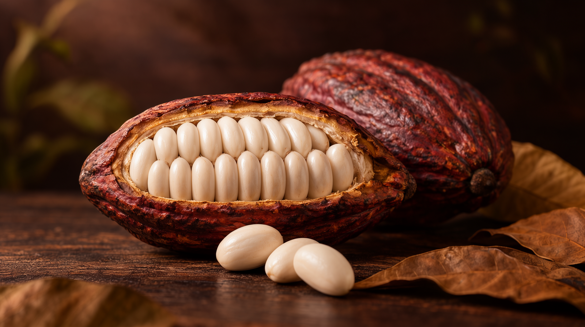
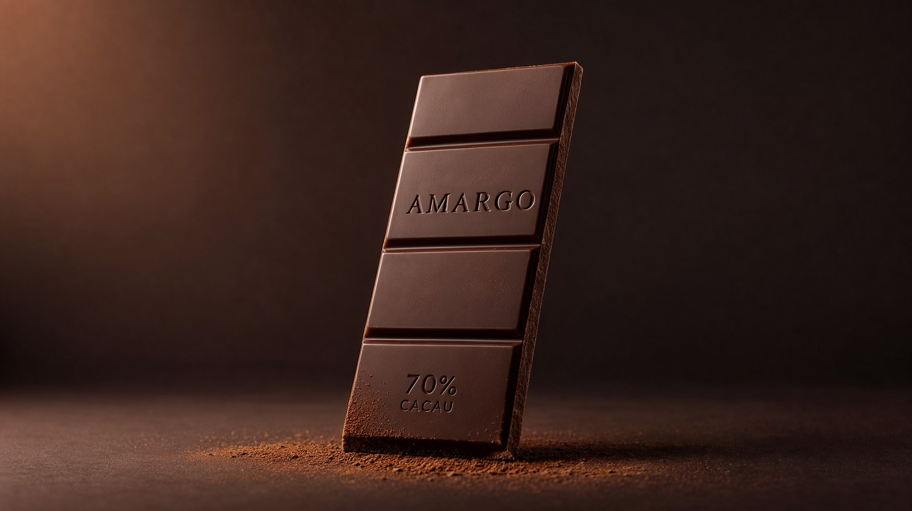
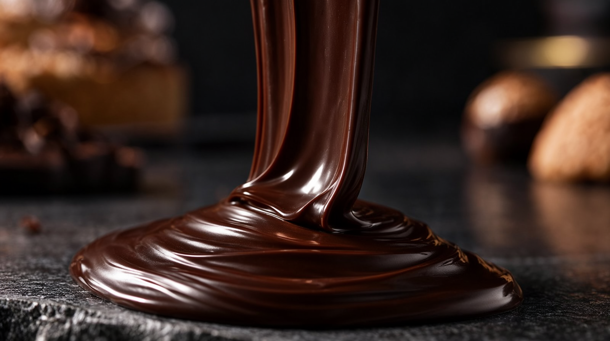
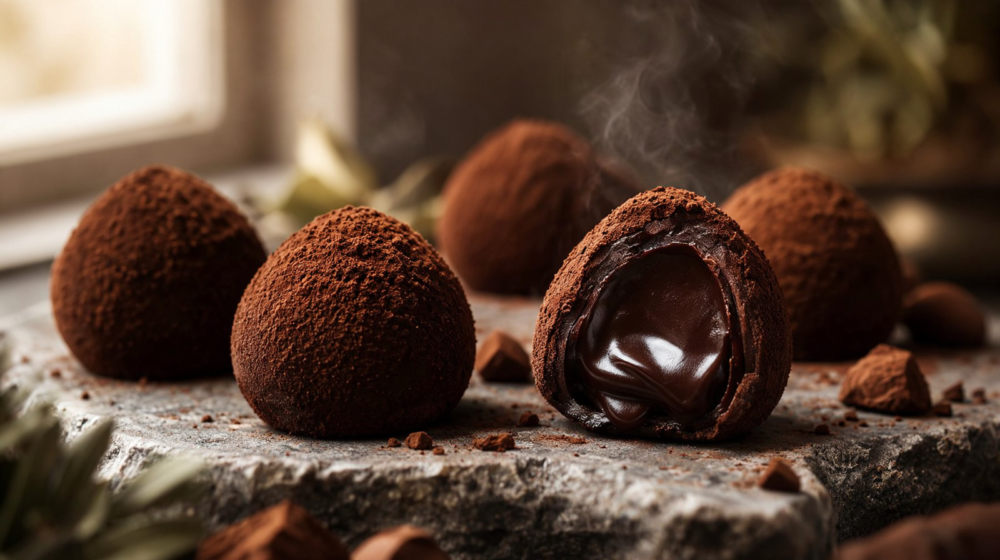
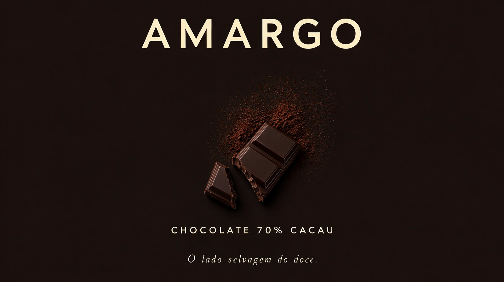
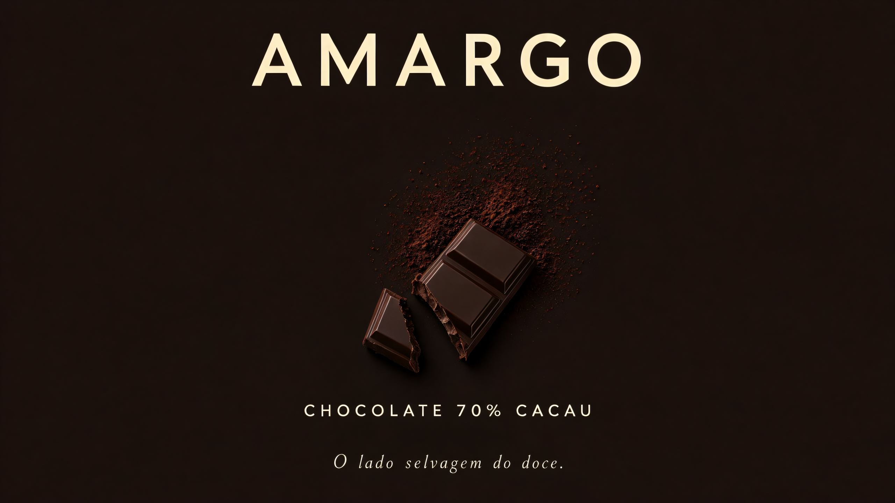

As duas reservas da v4 viraram teste controlado e passaram: o Wan 5B aguenta 1080p nativo sem artefatos (10/10 no QA, contra o aviso da literatura) e texto gravado sobrabre dolly fica estável. Com o jingle cantado em português do Ace-Step de bônus. Produto novo: AMARGO, chocolate 70% cacau — o primeiro comercial do projeto em Full HD nativo.
Testes controlados antes do produto
| Teste | Aposta | Resultado |
|---|---|---|
| T1 · 1080p nativo (Turbo a 1920×1088, 576 s) | Literatura diz que o 5B é treinado p/ 720p e deforma acima disso | 10/10, zero artefatos — o VLM jurou que "parece fotografia, não IA esticada". Produto estático + câmera travada segura o OOD. → master do v5 em 1080p |
| T2 · rótulo sob dolly (Turbo 704p, 205 s) | Texto impresso em movimento sofre warp | 10/10 estável — "GAROA" nítido do início ao fim do dolly → plano da barra AMARGO embossada com dolly-in no comercial |
| T3 · jingle cantado PT (Ace-Step 1.5, lyrics em português) | Vocais IA em PT podem sair toscos | Entregue como trilha alternativa (master B) — o master A segue instrumental (receita validada); ouça os dois |
O produto novo · 20 s · 1920×1080 · 48 fps · duas trilhas






A jornada
| v1 | v2 | v3 | v4 | v5 | |
|---|---|---|---|---|---|
| Produto | Perfume | Café | Cerveja | Mel | Chocolate |
| Resolução | 480p→720p | mista | mista | 704p nativo | 1080p nativo |
| Texto em vídeo | só end card | rótulo travado | rótulo travado | rótulo travado | embossado sob dolly ✓ |
| Áudio | ambiência | ambiência | trilha dirigida | música IA + diegético | + jingle PT cantado (alt.) |
| Render dos takes | ~9 min | ~58 min | ~78 min | ~21 min | ~37 min (4× Turbo 1080p: 522–630 s) + ~11 min áudio |